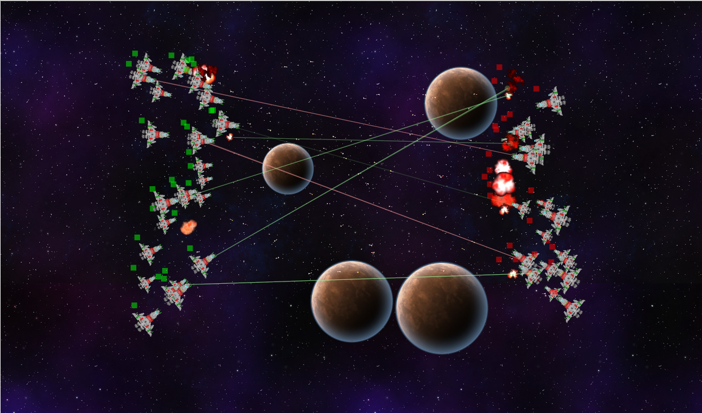
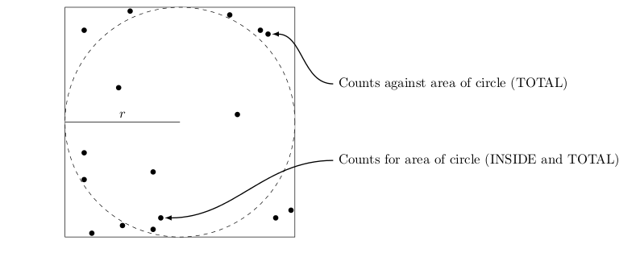

I'm a junior computer science student at Case Western Reserve University. Currently, I'm working at Yelp in San Francisco. During the school year I help research computer networks and help run a couple student groups.
If you want to get to know me better, you can check out my Github or download my resume. You can also view a sample project proposal I completed for ENGL398 here. On the other hand, I know that actually clicking through links is annoying, so here are some highlights:
I'm interested in solving problems. If you have interesting problems and you want help solving them, we should talk. I have a little bit of experience in a lot of different areas, but most of my big projects have been in web development.
So far as web development goes, most of my projects have been Padrino based, although recently I've been working with Express, which I'm very excited about. I also work on the client side, trying my best to be a designer.
If I'm not working on the web, I'm probably working in the Python ecosystem. You'll notice that I really like languages that exist way up above the bare metal. I can do work down in that area too, but you might have better luck elsewhere if you need someone to really mess with low level languages.
This is the first cut at an educational game that takes place in space. Through interacting with the game, a player will learn how simple AI works and elementary programming. Check it out on Github!
A research project for MATH408 that I put way to much work into; the paper that popped out can be found here. The paper is a survey of random number generation, with a little bit about how to make them cryptographically secure. I find it to be fun stuff, and I want to work on this more in the future -- there is still so much more to know.
Currently, I'm the president of the ACM student chapter at my university. This boils down to helping run events and trying to create positive change in my department.
Hacker's Society is arguably the coolest student group on campus. Clearly I'm biased, but the community of creative and curious individuals it is building is beautiful. This past semester I've been organizing the weekly meetings (read: I send an email once a week and beg people to come talk to us from time to time).
For the last couple years, I've worked for Mark Allman researching computer networks. Most of my time thus far has been spend looking at network scanning, but recently I hopped over into a project that's examining usage patterns of a fiber-to-the-home network CWRU has installed nearby campus.
This summer I'll be working at Yelp in San Francisco. I don't know exactly what I'll be doing yet, but I'll update this once I know more.
Last summer I worked at Bloomberg Law in New York City. It was a new product in Bloomberg's line of services, and it was a lot of fun to work on a small team with some cool projects.